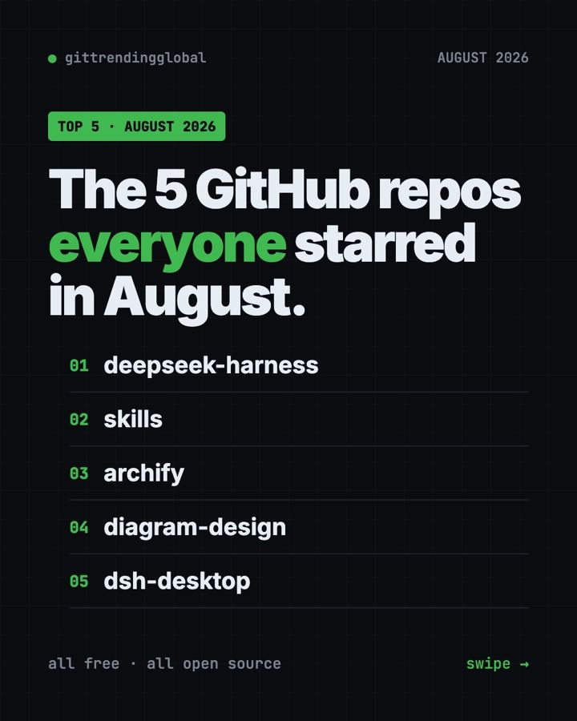

Best GitHub Repos of August 2026 (Free AI Tools)
The best GitHub repos of August 2026: DeepSeek's record-breaking AI agent, its desktop app, two AI diagram makers and expert coding skills, explained.

The best GitHub repos August 2026 had to offer were DeepSeek Harness, Matt Pocock's Skills, Archify, Diagram Design and DSH Desktop. All five are free and open source. One of them broke away from the pack: DeepSeek Harness gained about 152,000 stars in August alone.
A GitHub star is like a bookmark or a "like." August had two stories. First, DeepSeek released its own AI agent, and a community desktop app for it followed fast. Second, people fell for AI tools that draw diagrams for you. Below, each repo gets everyday uses, the exact setup, and a prompt for your AI helper.
Key takeaways
- DeepSeek Harness was the top repo of August 2026, with about 152,000 new stars. It is DeepSeek's own AI agent, built so every feature is a swappable plugin.
- Skills by Matt Pocock stayed in the top 5 for a third month in a row.
- Archify turns a sentence into a diagram you can click and explore.
- Diagram Design makes clean, magazine-style diagrams in your own brand colors.
- DSH Desktop wraps DeepSeek Harness in a normal app for Windows and Mac. It is a community project, not made by DeepSeek.

The 5 best GitHub repos of August 2026 at a glance
| Repo | What it does | Who it's for | Free? | Platforms |
|---|---|---|---|---|
| DeepSeek Harness | DeepSeek's AI agent, built from plugins | Tinkerers, developers | Yes (MIT), AI model use may cost money | Any computer with Node.js |
| Skills | Proven work habits for AI coding helpers | Anyone building with AI | Yes (MIT) | Claude Code, Codex, Copilot, Gemini CLI |
| Archify | Turns ideas into clickable diagrams | Anyone who explains plans | Yes (MIT) | Cursor, Claude Code, Codex, OpenCode |
| Diagram Design | Polished diagrams in your brand style | Founders, writers, teams | Yes (MIT) | Claude Code, Codex, Cursor, Copilot and more |
| DSH Desktop | Desktop app for DeepSeek Harness | People who don't want the terminal | Yes (MIT) | Windows, macOS |
Star gains are for August 2026 only. Total star counts below were checked on GitHub on October 16, 2026.
💡 Tip: Some steps use the "terminal," a plain text window where you type commands. On a Mac, open Terminal. On Windows, open PowerShell. Paste a line, press Enter, and wait.
1. DeepSeek Harness: DeepSeek's own AI agent
Stars: +152K in August · about 250K total
What it is: DeepSeek Harness, or "dsh," is a free AI agent from DeepSeek AI, the lab behind the DeepSeek models. An agent is an AI helper that takes actions, like reading files and running commands, not just chatting. Its big idea is "everything is a plugin." A plugin is an add-on piece, so every feature can be removed, swapped or replaced. You use it through a web page on your own computer. It went public on GitHub on August 13, 2026.
Who it's for: Tinkerers, students and developers who want to see how agents work or build their own add-ons.
How you'd use it:
- Point it at a project folder and ask for a plain summary of what is inside.
- Have it tidy up a messy folder, approving each step.
- Turn features on and off to learn what each part of an agent does.
Install it: Install Node.js from nodejs.org first. Then copy and paste this:
npx @deepseek-ai/dsh web
A page opens at http://127.0.0.1:3080. Connect a model, such as a DeepSeek API key, and give it a task.
Or let Claude or Codex do it: Claude Code and OpenAI Codex are AI helpers that can run setup steps for you. Paste this:
Set up DeepSeek Harness from https://github.com/deepseek-ai/deepseek-harness.
First summarize its SAFETY.md for me in plain words. Install Node.js if
missing, start it with "npx @deepseek-ai/dsh web", and help me run one safe task.
⚠️ Heads up: The README calls this a "developer preview" and warns, in capital letters, that changes will break things. Read its safety notice first. A DeepSeek API key may cost money.
See DeepSeek Harness on GitHub · Read the full guide
2. Skills: expert work habits for your AI helper
Stars: +34K in August · about 293K total
What it is: Coding teacher Matt Pocock shares the small skills he uses with AI helpers every day. A skill is a short set of instructions for one kind of job. The best known, /grill-me, makes the AI question you until the plan is clear, before it builds anything.
Who it's for: Anyone tired of AI helpers that guess instead of asking.
How you'd use it:
- Run
/grill-mebefore a new project or plan. - Use
/diagnosing-bugsso the AI fixes problems step by step, not by guessing. - Use
/to-ticketsto break a big plan into small tasks.
Install it: For Claude Code, copy and paste this into your terminal:
claude plugin install mattpocock-skills@claude-plugins-official
Then run /setup-matt-pocock-skills once in your project.
Or let Claude or Codex do it:
Install Matt Pocock's skills from https://github.com/mattpocock/skills
following the README for this agent, then use grill-me on my next idea.
See Skills on GitHub · Read the full guide

3. Archify: describe an idea, get a clickable diagram
Stars: +29K in August · about 84K total
What it is: Archify is a free skill for AI helpers that draws interactive diagrams. You describe something in plain words, and your AI builds a diagram you can click, explore and share as a single web page. It works for trip plans and learning maps as well as code.
Who it's for: Teachers, students, managers and anyone who explains how things fit together.
How you'd use it:
- Map a family trip: days, cities, trains and hotels in one picture.
- Make a learning map for a new subject.
- Ask it to map a code project you inherited.
Install it: Archify goes into your AI helper. Copy and paste this:
npx skills add tt-a1i/archify -g
Or let Claude or Codex do it: Once it is installed, ask in plain words. This is the README's own example:
Use Archify to diagram a web request: Browser calls the API,
the API checks Redis, and a cache miss queries PostgreSQL and fills the cache.
Swap in your own idea, like "Use Archify to map my week-long trip to Italy."
See Archify on GitHub · Read the full guide
4. Diagram Design: polished diagrams in your own style
Stars: +25K in August · about 56K total
What it is: Diagram Design is another skill for AI helpers. Where Archify is about clicking around, Diagram Design is about looking sharp. It makes clean, editorial-style diagrams as one HTML file you open by double-clicking. Its README lists 45 diagram types, from timelines to quadrants. It can even read your website and copy its colors and fonts.
Who it's for: Founders, writers, consultants and teams who put diagrams in decks and docs.
How you'd use it:
- Ask for a quadrant of your projects by impact and effort.
- Draw how your app's parts connect for a pitch deck.
- Match every diagram to your brand by pointing it at your website once.
Install it: Copy and paste this:
npx skills add cathrynlavery/diagram-design
Or let Claude or Codex do it: Ask in plain words, like the README's examples:
Make me an architecture diagram of my app: frontend, backend, database, Redis cache.
Then try: "I need a quadrant showing Q2 projects by impact vs effort."
See Diagram Design on GitHub · Read the full guide
5. DSH Desktop: DeepSeek Harness as a normal app
Stars: +20K in August · about 31K total
What it is: DSH Desktop puts DeepSeek Harness inside a regular desktop app for Windows and Mac. No Node.js, no commands. It starts and manages everything for you and adds a tray icon and a plugin market. Newer versions let you control it from your phone. It is an independent community project. Its README says it has no tie to DeepSeek.
Who it's for: People who want to try DeepSeek's agent without touching the terminal.
How you'd use it:
- Install it like any app and start giving the agent tasks.
- Browse and add plugins from the built-in market.
- Start a task on your computer from your phone and check on it later.
Install it: Download the Windows installer or the Mac DMG from the links in the DSH Desktop README. The README is in Chinese, with an English version linked at the top.
Or let Claude or Codex do it:
Read https://github.com/anywhere-labs/dsh-desktop and tell me in plain English
how to install it on my computer, what it needs, and what data it sends.
Then walk me through connecting a model.
⚠️ Heads up: The README warns that turning on local network access has no login. Anyone on the same Wi-Fi could then control your computer. Leave it off unless you trust the network.
Which one should you try first?
- You want to learn how AI agents work: try DeepSeek Harness. Expect some bugs.
- You want the same agent without the terminal: try DSH Desktop.
- Your AI helper keeps guessing: use Skills and start with
/grill-me. - You want to explore an idea by clicking: try Archify.
- You want diagrams that look good in a deck: try Diagram Design.

Brand new to all this? DSH Desktop is the easiest to install. Archify is the most fun once you have an AI helper.
For the bigger picture, read August 2026 in AI. Compare with July's top repos and September's, or see the 5 biggest GitHub repos of Q3 2026.
FAQ
What were the best GitHub repos of August 2026?
The top five by stars gained were DeepSeek Harness, Matt Pocock's Skills, Archify, Diagram Design and DSH Desktop. DeepSeek Harness led by far, with about 152,000 new stars.
Is DeepSeek Harness made by DeepSeek?
Yes. The README says it is developed by DeepSeek AI. DSH Desktop, the app version, is a separate community project that DeepSeek does not run.
Archify or Diagram Design: which should I use?
Use Archify when you want to click around and explore. Use Diagram Design when you want a clean picture for a deck or document. Both are free.
Are these GitHub repos free?
Yes, all five are free and open source. DeepSeek Harness and DSH Desktop need an AI model to work, and paid models like a DeepSeek API key cost money.
What are the best GitHub repos for Claude Code from August 2026?
Skills, Archify and Diagram Design all install straight into Claude Code. They add better work habits and two different diagram styles.
Want a new free tool explained every day? Follow @gittrendingglobal on Instagram.
Keep reading

Trending GitHub Repos October 2026: The Top 5 So Far
The trending GitHub repos of October 2026 so far: a free Photoshop-style editor, an AI art studio, a big AI model for gaming PCs and more, explained.

Trending GitHub Repos This Week, Oct 5 2026: The Top 5
Trending GitHub repos this week Oct 5 2026: Matt Pocock's skills, the openGym workout tracker, e2e testing, HyperFrames video and claude-mem memory.

GitHub Trending September 28, 2026: VoiceStudio Takes #1
GitHub trending September 28 2026: VoiceStudio, Hindsight, Paperclip, NVIDIA's OpenShell and a free 542-lesson AI course, with setup steps for each.